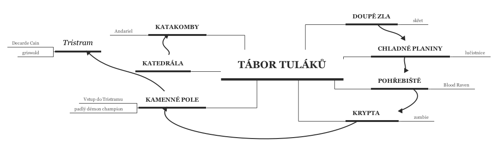
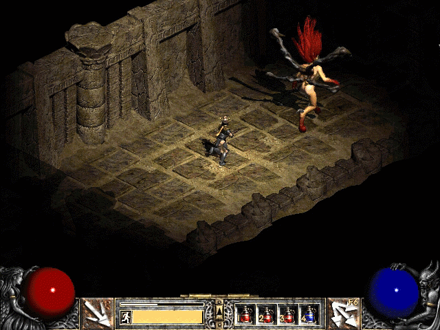

Adventura – Diablo II
Hra bude na motivy známé počítačové hry Diablo II.
Hlavní cíl – Zachránit mága jménem Deckarde Cain z vypáleného Tristramu a poté zničit Andariel a sebrat pohár vítězství který z ní vypadne o zabití
Hráč je na začátku umístěn do tábora tuláků, hlavního tábora, kde má kolem sebe několik postav s kterými může mluvit. Postavy mu zadají úkoly, a po jejich splnění za ně obdrží předměty nutné k výhře a poražení dalších nepřátel.
Hráč bude muset jít do doupě zla, tam zabít skřeta, od Akary za tento úkol obdrží meč hrdinů. Poté se bude muset postupně dostat na pohřebiště, kde se utká s Blood Raven a od Kashyi za toto zabití dostane amulet přesnosti, ten mu pomůže zabít skřeta který chrání obelisky v kamenném poli a pokud z sebere kámen který z něj vypadne, bude se moct dostat do Tristramu, města kde zachrání Deckarde Caina. Ten mu udělí poslední nutný předmět s kterým už se může vydat do katakomb zabít Andariel. Po sebrání poháru vítězství, který z ní vypadne, hráč vyhrává a hra končí
Mapa lokací
Z tábora se dá dostat do jakékoliv lokace díky teleportu, ale je nutné objevovat postupně. Jakmile tedy hráč lokaci objeví, až poté se do ní bude moct z táboru teleportovat. Objeví ji tak, že do ní vstoupí z předchozí lokace (která nebude tábor tuláků)

Úkoly:
Vybít doupě zla – zabít skřeta v něm
Zabít Blood Raven na pohřebišti
Zachránit Deckarde Caina z Tristramu
Dostat se do Katakomb a zabít Andariel
Příkazy:
Jakýkoliv příkaz jde použít bez parametru. Příkaz poté vypíše co je možné použít jako parametry.
Nápověda
Prozkoumej (prozkoumá věc z batohu nebo z prostoru)
Konec
Jdi
Vezmi (uloží předmět z prostoru do batohu)
Zahoď (zahodí předmět z batohu do prostoru)
Batoh (vypíše obsah batohu i s popisem)
Bojuj (Utká se s monstrem)
Mluv (Promluví si s danou postavou)
Realný záběr ze hry Diablo 2 a rovnou s Andariel
